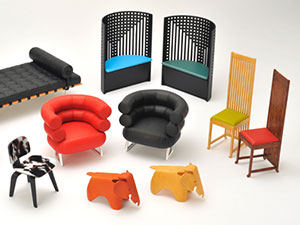

Подавляющее большинство людей основывают выбор стульев на их внешнем виде и стоимости. Чаще всего, в приоритете цена изделий. При этом далеко не все учитывают, что почти третью часть всего времени мы проводим именно в сидячем положении. В результате такого выбора — неправильная осанка, боли в спине или сломанная мебель после непродолжительной эксплуатации. Для того чтобы избежать неблагоприятных последствий необходимо максимально ответственно отнестись к выбору стула. Итак, давайте разберемся, на что же следует обращать внимание.
Тип и назначение
Для начала необходимо определиться с типом стульев. Так, на кухне широкое распространение получили универсальные модели. Помимо столовой, их можно устанавливать практически в любом месте квартиры, в том числе, гостиной, кабинете, прихожей и пр. Один набор стульев для кухни, при случае, используется во всех комнатах квартиры.
Выбирая стулья для улицы, также обратите внимание на универсальные модели. Для сада или веранды лучше всего подходят изделия из массивов деревьев или недорогие пластиковые модели. Важно помнить, что древесина должна быть исключительного качества и прочности. Более того, поверхность деревянной мебели обязательно обрабатывается специальной влагостойкой пропиткой.
В офисе или кабинете используются наиболее прочные и дорогие модели стульев. «Рабочие» кресла рассчитаны на интенсивную эксплуатацию (до10 часов в день), поэтому должны соответствовать самым высоким требованиям прочности и комфорта.
Комфорт и удобство
Бесспорно, удобство кресла — вопрос сугубо индивидуальный. Поэтому выбирать здесь лучше всего исходя из собственных ощущений комфорта. И всё же стулья могут быть мягкими, жесткими и полужесткими. Последние, как правило, изготавливаются с эластичными прослойками на сидении или спинке, а в мягких используются специальные наполнители. Компромиссным решением этого вопроса считаются жесткие стулья с мягкой спинкой. Такие модели наиболее универсальны.
Прочность
Спрогнозировать нагрузку на стул довольно тяжело, поэтому изначально стоит выбирать наиболее прочные модели. Безусловно, лучшими здесь являются стулья с металлическим каркасом и цельнолитые предметы из полимерных материалов, стекла и пр. Если вы отдаете предпочтение деревянным изделиям, помните, что их прочность напрямую зависит от материала. Исключительно надежными считаются модели из твердых пород древесины, в частности, бука, дуба, ореха, тика и пр.
Стиль
Покупая стулья для дома, прежде всего, убедитесь в том, что они соответствуют дизайну стола или же приценитесь к комплектам мебели. Кроме того, они должны гармонично дополнять интерьер всего помещения. Однако здесь разрешается экспериментировать, с учётом, конечно, некоторых законов эклектики (смешения стилей). Так, например, изящные переплеты в классической мебели добавляют приятной экзотики, а бездумное сочетание стекла, дерева и металла заставляет задуматься о профпригодности дизайнера.
Долговечность
Долговечность мебели — наиболее важный и сложный к определению показатель. В большей степени долговечность, впрочем, как и цена, складывается из прочности, имени производителя, конструктивных особенностей и материалов. Лидируют здесь: мебель из твердых пород деревев, металлические изделия, а также цельнолитые стулья из стекла и пластика.
Экологическая мебель в Алматы
Исчтоник: mebelshop.com